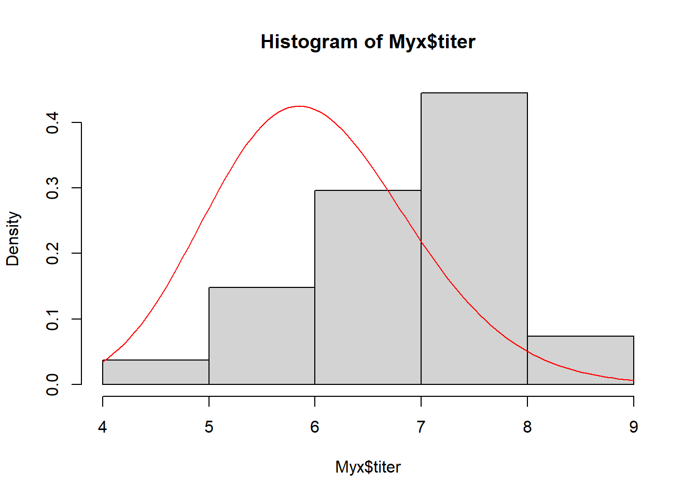
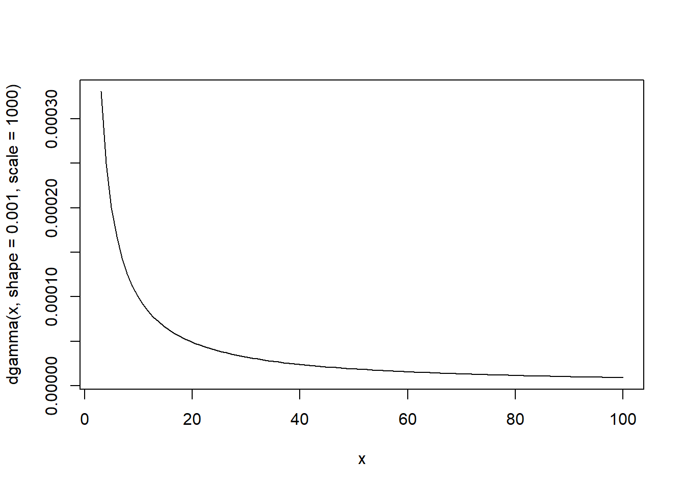
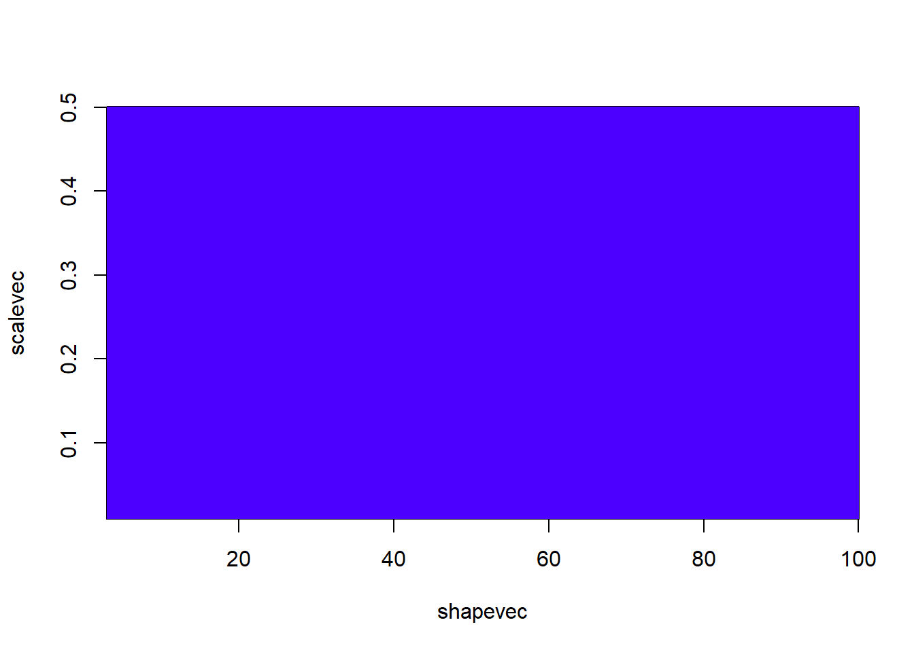
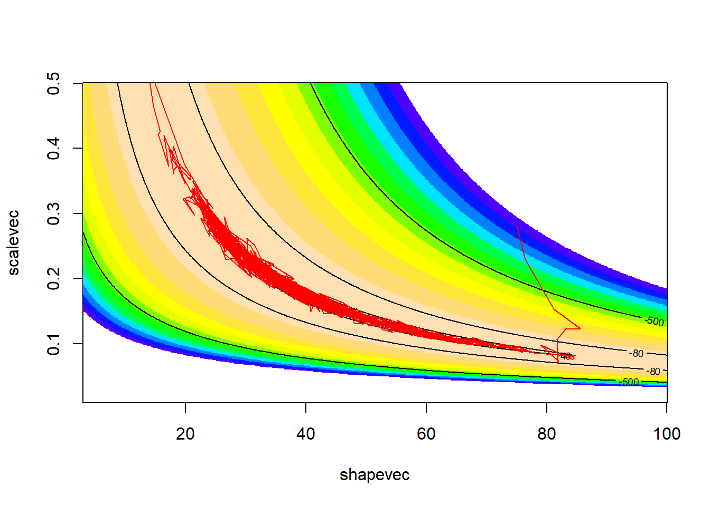
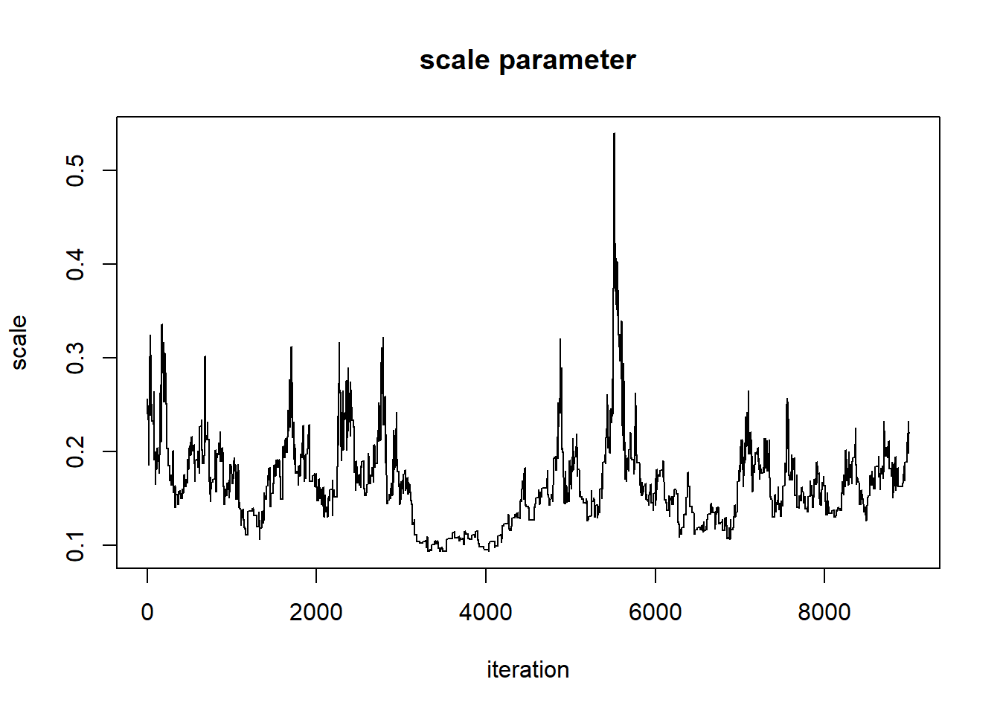
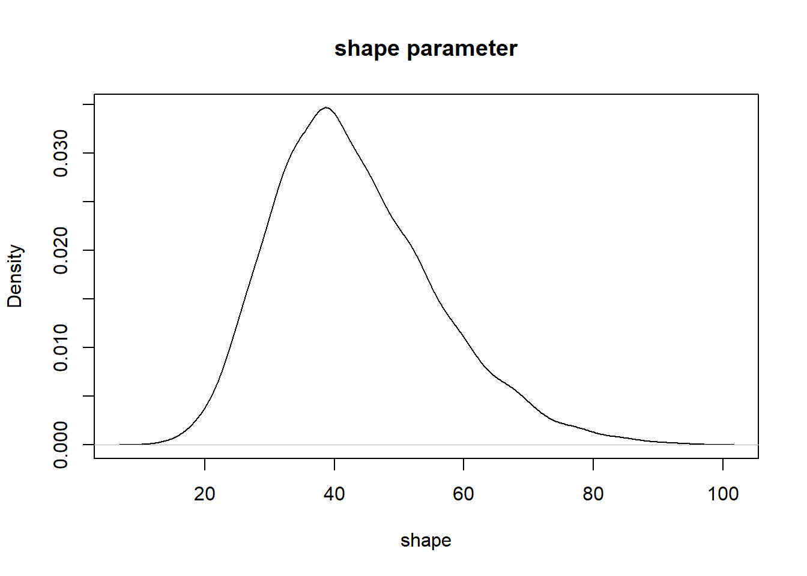
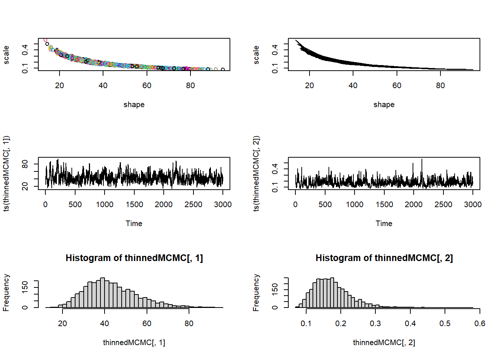
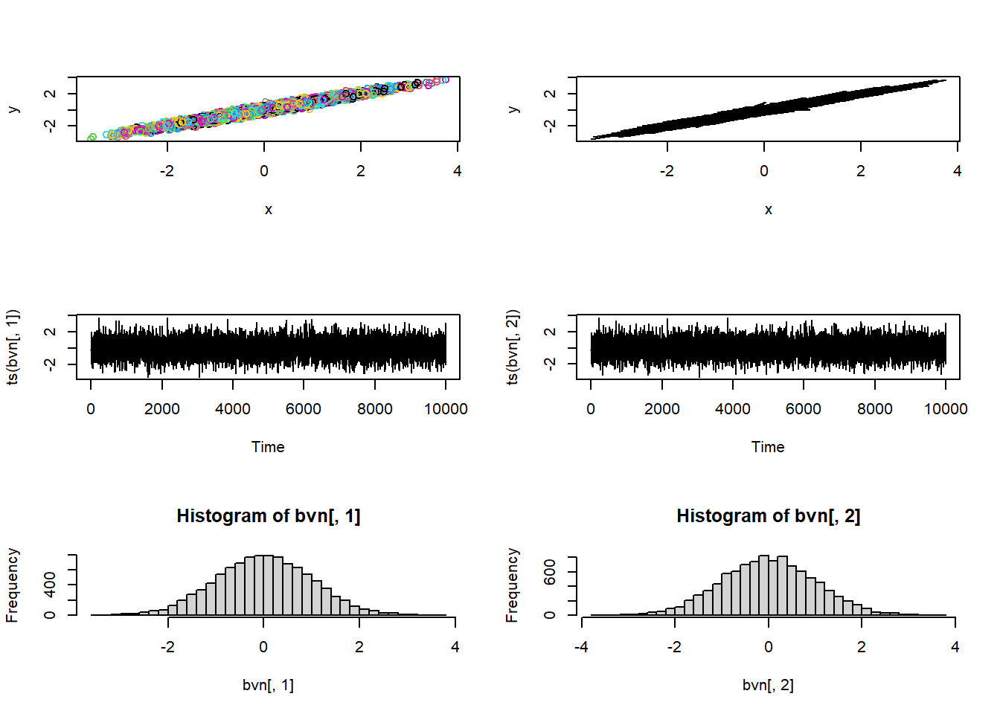
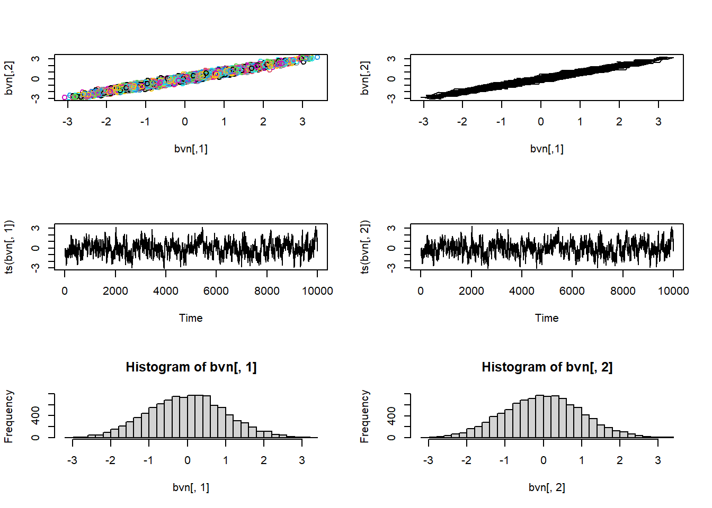
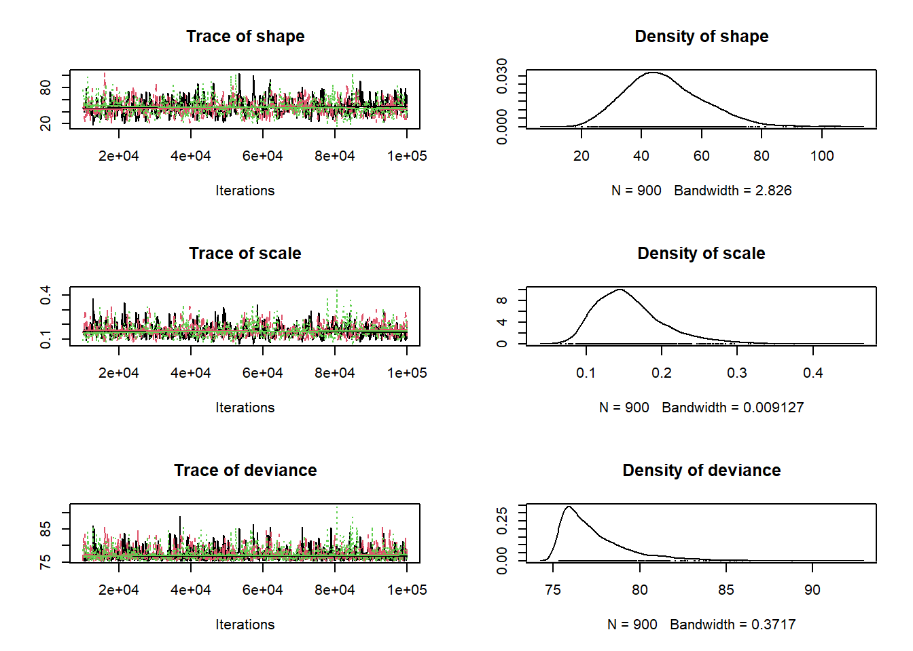

Bayesian Analysis #2: MCMC
NRES 746
Fall 2023
For those wishing to follow along with the R-based demo in class, click here for the companion R script for this lecture.
Markov Chain Monte Carlo
MCMC is a special type of random number generator that is designed to sample from difficult-to-describe (e.g., multivariate, hierarchical) probability distributions. In many/most cases, the posterior distribution for ecological problems is a very difficult-to-describe probability distribution.
MCMC is kind of magical in that it allows you to sample from probability distributions that are impossible to fully define mathematically! The MCMC approach uses random jumps in parameter space that eventually end up sampling from the posterior distribution! The key to MCMC is the following:
The probability of a successful jump in parameter space from point A to point B is proportional to the ratio of the posterior probabilities at these two points.
The probability of a successful jump in parameter space can be characterized as:
\(Prob(jump) * Prob(accept)\)
That is: in order to jump, you need to propose a specific jump (according to some probability distribution) and then accept that jump!
The ratio of jump probabilities can be characterized as:
\(\frac{Prob(jump_{a\rightarrow b})\cdot Prob(accept b|a)}{Prob(jump_{b\rightarrow a})\cdot Prob(accept a|b)}\)
For this procedure to (eventually) extract random samples from the posterior distribution, this ratio MUST be equal to the ratio of the posterior probabilities at points A and B:
\(\frac{Posterior(B)}{Posterior(A)}\)
If this rule is met, then in the long run the chain will explore each segment of parameter space in accordance with the posterior probability of that segment- thereby eventually capturing the entire posterior distribution (if run long enough).
Note: if the proposal distribution is symmetrical, then the probability of proposing a jump from A to B is the same as the probability of proposing a jump from B to A. Therefore, the proposal probabilities drop out of the above equation…
Amazingly, MCMC at its core is not that difficult to describe or even to implement. Let’s look at a simple MCMC algorithm.
Metropolis-Hastings algorithm
This algorithm is essentially the same as the simulated annealing algorithm we discussed in the “optimization” lecture! The main difference: the “temperature” doesn’t decrease over time and the temperature parameter k is always set to 1.
The M-H algorithm can be expressed as:
\(Prob(accept B|A) = min(1,\frac{Posterior(B)}{Posterior(A)}\cdot \frac{Prob(b\rightarrow a)}{Prob(a\rightarrow b)})\)
Q: Does it make sense that this algorithm meets the basic rule of MCMC, that is, that the ratio of jump probabilities to/from any two points in parameter/model space is equal to the ratio of posterior probabilities evaluated at those two points?
Bivariate normal example
This example is modified from this link by Darren Wilkinson
Remember that MCMC samplers are just a type of random number generator. We can use a Metropolis-Hastings sampler to develop our own random number generator for a simple known distribution. In this example, we use a M-H Sampler to generate random numbers from a standard bivariate normal probability distribution.
We don’t need an MCMC sampler for this simple example (we already have ‘perfect’ random number generators, like the one below). One way to do this would be to use the following code, which draws and visualizes an arbitrary number of independent samples from the bivariate standard normal distribution with a correlation parameter, \(\rho\).
# Simple example of MCMC sampling -----------------------
# first, let's build a function that generates random numbers from a bivariate standard normal distribution
rbvn<-function (n, rho) #function for drawing an arbitrary number of independent samples from the bivariate standard normal distribution.
{
x <- rnorm(n, 0, 1)
y <- rnorm(n, rho * x, sqrt(1 - rho^2))
cbind(x, y)
}
# Now, plot the random draws from this distribution, make sure this makes sense!
bvn<-rbvn(10000,0.98)
par(mfrow=c(3,2))
plot(bvn,col=1:10000)
plot(bvn,type="l")
plot(ts(bvn[,1]))
plot(ts(bvn[,2]))
hist(bvn[,1],40)
hist(bvn[,2],40)
par(mfrow=c(1,1))# Metropolis-Hastings implementation of bivariate normal sampler...
library(mvtnorm) # load a package that allows us to compute probability densities for mv normal distribution
metropolisHastings <- function (n, rho=0.98){ # an MCMC sampler implementation of a bivariate random number generator
mat <- matrix(ncol = 2, nrow = n) # matrix for storing the random samples
x <- 0 # initial values for all parameters
y <- 0
prev <- dmvnorm(c(x,y),mean=c(0,0),sigma = matrix(c(1,rho,rho,1),ncol=2)) # probability density of the distribution at the starting values
mat[1, ] <- c(x, y) # initialize the markov chain
counter <- 1
while(counter<=n) {
newx <- rnorm(1,x,0.5) # make a jump. Note the symmetrical proposal distribution
newy <- rnorm(1,y,0.5)
newprob <- dmvnorm(c(newx,newy),sigma = matrix(c(1,rho,rho,1),ncol=2)) # assess whether the new jump is good!
ratio <- newprob/prev # compute the ratio of probabilities at the old (jump from) and proposed (jump to) locations.
prob.accept <- min(1,ratio) # decide the probability of accepting the new jump!
rand <- runif(1)
if(rand<=prob.accept){
x=newx;y=newy # set x and y to the new location
mat[counter,] <- c(x,y) # store this in the storage array
counter=counter+1
prev <- newprob # get ready for the next iteration
}
}
return(mat)
}Then we can use the M-H sampler to get random samples from this known distribution…
# Test the new M-H sampler
bvn<-metropolisHastings(10000,0.98)
par(mfrow=c(3,2))
plot(bvn,col=1:10000)
plot(bvn,type="l")
plot(ts(bvn[,1]))
plot(ts(bvn[,2]))
hist(bvn[,1],40)
hist(bvn[,2],40)par(mfrow=c(1,1))Q: Why does the MCMC routine produce ‘lower quality’ random numbers than the first (bivariate normal) sampler we built?
Okay, enough with super simple examples- let’s try it for a non-trivial problem, like the Myxomatosis example from the Bolker book!
Myxomatosis revisited (again!)
# MCMC implementation of the Myxomatosis example from the Bolker book --------------
library(emdbook)
MyxDat <- MyxoTiter_sum
Myx <- subset(MyxDat,grade==1)
head(Myx)## grade day titer
## 1 1 2 5.207
## 2 1 2 5.734
## 3 1 2 6.613
## 4 1 3 5.997
## 5 1 3 6.612
## 6 1 3 6.810Recall that we are modeling the distribution of measured titers (virus loads) for Australian rabbits. Bolker chose to use a Gamma distribution. Here is the empirical distribution:
# Visualize the Myxomatosis data for the 100th time!
hist(Myx$titer,freq=FALSE)
We need to estimate the gamma shape and scale parameters that best fit this empirical distribution. Here is one example of a Gamma fit to this distribution:
# ... and overlay a proposed data-generating model (gamma distribution)
hist(Myx$titer,freq=FALSE)
curve(dgamma(x,shape=40,scale=0.15),add=T,col="red")
Recall that the 2-D (log) likelihood surface looks something like this:
# define 2-D parameter space!
shapevec <- seq(3,100,by=0.1)
scalevec <- seq(0.01,0.5,by=0.001)
# define the likelihood surface -------------
GammaLogLikelihoodFunction <- function(params){
sum(dgamma(Myx$titer,shape=params['shape'],scale=params['scale'],log=T))
}
surface2D <- matrix(nrow=length(shapevec),ncol=length(scalevec)) # initialize storage variable
newparams <- c(shape=50,scale=0.2)
for(i in 1:length(shapevec)){
newparams['shape'] <- shapevec[i]
for(j in 1:length(scalevec)){
newparams['scale'] <- scalevec[j]
surface2D[i,j] <- GammaLogLikelihoodFunction(newparams)
}
}
# Visualize the likelihood surface
image(x=shapevec,y=scalevec,z=surface2D,zlim=c(-1000,-30),col=topo.colors(12))
contour(x=shapevec,y=scalevec,z=surface2D,levels=c(-30,-40,-80,-500),add=T)Here is an implementation of the M-H algorithm to find the joint posterior distribution!
First, we need a likelihood function (our old friend!)- this time, we will return real probabilities– NOT log-transformed probabilities
# Write a non-log-transformed likelihood function ------------
GammaLikelihoodFunction <- function(params){
prod(dgamma(Myx$titer,shape=params['shape'],scale=params['scale'],log=F))
}
# and here's the log likelihood function
GammaLogLikelihoodFunction <- function(params){
sum(dgamma(Myx$titer,shape=params['shape'],scale=params['scale'],log=T))
}
params <- c(shape=40,scale=0.15)
params## shape scale
## 40.00 0.15GammaLikelihoodFunction(params)## [1] 2.906766e-22GammaLogLikelihoodFunction(params)## [1] -49.58983Then, we need a prior distribution for our parameters! Let’s assign relatively flat priors for both of our parameters. In this case, let’s assign a \(gamma(shape=0.001,scale=1000)\) for both parameters (mean of 1 and very large variance):
# Function for returning the prior probability density for any point in parameter space
GammaPriorFunction <- function(params){
prior <- c(shape=NA,scale=NA)
prior['shape'] <- dgamma(params['shape'],shape=0.001,scale=1000)
prior['scale'] <- dgamma(params['scale'],shape=0.001,scale=1000)
# prior['shape'] <- dunif(params['shape'],3,100) # alternative: could use uniform prior!
# prior['scale'] <- dunif(params['scale'],0.01,0.5)
return(prod(prior))
}
GammaLogPriorFunction <- function(params){
prior <- c(shape=NA,scale=NA)
prior['shape'] <- dgamma(params['shape'],shape=0.001,scale=1000,log=T)
prior['scale'] <- dgamma(params['scale'],shape=0.001,scale=1000,log=T)
# prior['shape'] <- dunif(params['shape'],3,100) # alternative: could use uniform prior!
# prior['scale'] <- dunif(params['scale'],0.01,0.5)
return(sum(prior))
}
curve(dgamma(x,shape=0.001,scale=1000),3,100)
params <- c(shape=40,scale=0.15)
params## shape scale
## 40.00 0.15GammaPriorFunction(params)## [1] 1.583765e-07prior2D <- matrix(nrow=length(shapevec),ncol=length(scalevec)) # initialize storage variable
newparams <- c(shape=50,scale=0.2)
for(i in 1:length(shapevec)){
newparams['shape'] <- shapevec[i]
for(j in 1:length(scalevec)){
newparams['scale'] <- scalevec[j]
prior2D[i,j] <- GammaPriorFunction(newparams)
}
}
# Visualize the prior likelihood surface
image(x=shapevec,y=scalevec,z=prior2D,zlim=c(0.000000001,0.001),col=topo.colors(12))
#contour(x=shapevec,y=scalevec,z=prior2D,levels=c(-30,-40,-80,-500),add=T)Note that we are also assuming that the shape and scale are independent in the prior (multiplicative probabilities for the joint prior). However, this does not impose the same assumption on the posterior- parameter correlations in the likelihood can and will be reflected in the posterior distribution.
Then, we need a function that can compute the ratio of posterior probabilities for any given jump in parameter space. Because we are dealing with a ratio of posterior probabilities, we do NOT need to compute the normalization constant.
Without the need for a normalization constant, we just need to compute the ratio of weighted likelihoods (that is, the likelihood weighted by the prior)
# Function for computing the ratio of posterior densities -----------------
PosteriorRatio <- function(oldguess,newguess){
oldLik <- max(1e-90,GammaLikelihoodFunction(oldguess)) # compute likelihood and prior density at old guess
oldPrior <- max(1e-90,GammaPriorFunction(oldguess))
newLik <- GammaLikelihoodFunction(newguess) # compute likelihood and prior density at new guess
newPrior <- GammaPriorFunction(newguess)
return((newLik*newPrior)/(oldLik*oldPrior)) # compute ratio of weighted likelihoods
}
PosteriorRatio2 <- function(oldguess,newguess){
oldLogLik <- GammaLogLikelihoodFunction(oldguess) # compute likelihood and prior density at old guess
oldLogPrior <- GammaLogPriorFunction(oldguess)
newLogLik <- GammaLogLikelihoodFunction(newguess) # compute likelihood and prior density at new guess
newLogPrior <- GammaLogPriorFunction(newguess)
return(exp((newLogLik+newLogPrior)-(oldLogLik+oldLogPrior))) # compute ratio of weighted likelihoods
}
oldguess <- params
newguess <- c(shape=39,scale=0.15)
PosteriorRatio(oldguess,newguess)## [1] 0.01423757PosteriorRatio2(oldguess,newguess)## [1] 0.01423757Then we need a function for making new guesses, or jumps in parameter space:
# Define proposal distribution --------------------------
#for jumps in parameter space (use normal distribution)!
# function for making new guesses
newGuess <- function(oldguess){
sdshapejump <- 4
sdscalejump <- 0.07
jump <- c(shape=rnorm(1,mean=0,sd=sdshapejump),scale=rnorm(1,0,sdscalejump))
newguess <- abs(oldguess + jump) # note: by taking the abs val to avoid negative numbers, our proposal jump probs are not strictly symmetrical, but this should not present a big issue in practice
return(newguess)
}
# set a new "guess" near to the original guess
newGuess(oldguess=params) ## shape scale
## 38.32598095 0.04727806newGuess(oldguess=params)## shape scale
## 41.53852865 0.05725767newGuess(oldguess=params)## shape scale
## 46.8468931 0.1689683Now we are ready to implement the Metropolis-Hastings MCMC algorithm:
We need a starting point:
# Set a starting point in parameter space -------------------
startingvals <- c(shape=75,scale=0.28) # starting point for the algorithmLet’s play with the different functions we have so far…
# Try our new functions ------------------
newguess <- newGuess(startingvals) # take a jump in parameter space
newguess## shape scale
## 71.6866159 0.1617311PosteriorRatio2(startingvals,newguess) # difference in posterior ratio## [1] 8.73916e+291Now let’s look at the Metropolis-Hastings routine:
# Visualize the Metropolis-Hastings routine: ---------------
chain.length <- 11
oldguess <- startingvals
guesses <- matrix(0,nrow=chain.length,ncol=2)
colnames(guesses) <- names(startingvals)
guesses[1,] <- startingvals
counter <- 2
while(counter <= chain.length){
newguess <- newGuess(oldguess)
post.rat <- PosteriorRatio2(oldguess,newguess)
prob.accept <- min(1,post.rat)
rand <- runif(1)
if(rand<=prob.accept){
oldguess <- newguess
guesses[counter,] <- newguess
counter=counter+1
}
}
# visualize!
image(x=shapevec,y=scalevec,z=surface2D,zlim=c(-1000,-30),col=topo.colors(12))
contour(x=shapevec,y=scalevec,z=surface2D,levels=c(-30,-40,-80,-500),add=T)
lines(guesses,col="red")
Let’s run it for longer…
# Get more MCMC samples --------------
chain.length <- 100
oldguess <- startingvals
guesses <- matrix(0,nrow=chain.length,ncol=2)
colnames(guesses) <- names(startingvals)
guesses[1,] <- startingvals
counter <- 2
while(counter <= chain.length){
newguess <- newGuess(oldguess)
post.rat <- PosteriorRatio2(oldguess,newguess)
prob.accept <- min(1,post.rat)
rand <- runif(1)
if(rand<=prob.accept){
oldguess <- newguess
guesses[counter,] <- newguess
counter=counter+1
}
}
# visualize!
image(x=shapevec,y=scalevec,z=surface2D,zlim=c(-1000,-30),col=topo.colors(12))
contour(x=shapevec,y=scalevec,z=surface2D,levels=c(-30,-40,-80,-500),add=T)
lines(guesses,col="red")
How about for even longer??
# And more... -------------------
chain.length <- 1000
oldguess <- startingvals
guesses <- matrix(0,nrow=chain.length,ncol=2)
colnames(guesses) <- names(startingvals)
guesses[1,] <- startingvals
counter <- 2
while(counter <= chain.length){
newguess <- newGuess(oldguess)
post.rat <- PosteriorRatio2(oldguess,newguess)
prob.accept <- min(1,post.rat)
rand <- runif(1)
if(rand<=prob.accept){
oldguess <- newguess
guesses[counter,] <- newguess
counter=counter+1
}
}
# visualize!
image(x=shapevec,y=scalevec,z=surface2D,zlim=c(-1000,-30),col=topo.colors(12))
contour(x=shapevec,y=scalevec,z=surface2D,levels=c(-30,-40,-80,-500),add=T)
lines(guesses,col="red")
This looks better! The search algorithm is finding the high-likelihood parts of parameter space pretty well!
Now, let’s look at the chain for the “shape” parameter
# Evaluate "traceplot" for the MCMC samples... ---------------------
## Shape parameter
plot(1:chain.length,guesses[,'shape'],type="l",main="shape parameter",xlab="iteration",ylab="shape")
And for the scale parameter…
## Scale parameter
plot(1:chain.length,guesses[,'scale'],type="l",main="scale parameter",xlab="iteration",ylab="scale")
Can we say that these chains have converged on the posterior distribution for the shape parameter??
First of all, the beginning of the chain “remembers” the starting value, and is therefore not a stationary distribution. We need to remove the first part of the chain, called the ‘burn-in’.
# Remove "burn-in" (allow MCMC routine some time to get to the posterior) --------------
burn.in <- 100
MCMCsamples <- guesses[-c(1:burn.in),]
chain.length=chain.length-burn.in
plot(1:chain.length,MCMCsamples[,'shape'],type="l",main="shape parameter",xlab="iteration",ylab="shape")
plot(1:chain.length,MCMCsamples[,'scale'],type="l",main="scale parameter",xlab="iteration",ylab="scale")
But it still doesn’t look all that great. Let’s run it for even longer, and see if we get something that looks more like a proper random number generator (white noise)…
# Try again- run for much longer ---------------------
chain.length <- 20000
oldguess <- startingvals
guesses <- matrix(0,nrow=chain.length,ncol=2)
colnames(guesses) <- names(startingvals)
guesses[1,] <- startingvals
counter <- 2
while(counter <= chain.length){
newguess <- newGuess(oldguess)
post.rat <- PosteriorRatio2(oldguess,newguess)
prob.accept <- min(1,post.rat)
rand <- runif(1)
if(rand<=prob.accept){
oldguess <- newguess
guesses[counter,] <- newguess
counter=counter+1
}
}
# visualize!
image(x=shapevec,y=scalevec,z=surface2D,zlim=c(-1000,-30),col=topo.colors(12))
contour(x=shapevec,y=scalevec,z=surface2D,levels=c(-30,-40,-80,-500),add=T)
lines(guesses,col="red")Let’s first remove the first 5000 samples as a burn-in
# Use longer "burn-in" ------------------
burn.in <- 5000
MCMCsamples <- guesses[-c(1:burn.in),]
chain.length=chain.length-burn.inNow, let’s look at the chains again
plot(1:chain.length,MCMCsamples[,'shape'],type="l",main="shape parameter",xlab="iteration",ylab="shape")
plot(1:chain.length,MCMCsamples[,'scale'],type="l",main="scale parameter",xlab="iteration",ylab="scale")When evaluating these trace plots, we are hoping to see a “stationary distribution” that looks like white noise. This trace plot looks like it might have a little autocorrelation. One way to “fix” this is to thin the MCMC samples:
# "thin" the MCMC samples -----------------------
thinnedMCMC <- MCMCsamples[seq(1,chain.length,by=5),]
plot(1:nrow(thinnedMCMC),thinnedMCMC[,'shape'],type="l",main="shape parameter",xlab="iteration",ylab="shape")
plot(1:nrow(thinnedMCMC),thinnedMCMC[,'scale'],type="l",main="scale parameter",xlab="iteration",ylab="scale")
Now we can examine our posterior distribution!
# Visualize the posterior!
plot(density(thinnedMCMC[,'scale']),main="scale parameter",xlab="scale")
plot(density(thinnedMCMC[,'shape']),main="shape parameter",xlab="shape")
And we can visualize as before.
# More visual posterior checks... -----------------
par(mfrow=c(3,2))
plot(thinnedMCMC,col=1:10000)
plot(thinnedMCMC,type="l")
plot(ts(thinnedMCMC[,1]))
plot(ts(thinnedMCMC[,2]))
hist(thinnedMCMC[,1],40)
hist(thinnedMCMC[,2],40)
par(mfrow=c(1,1))Hopefully it is clear that the Metropolis-Hastings MCMC method could be modified to fit arbitrary numbers of free parameters for arbitrary models. However, the M-H algorithm by itself is not necessarily the most efficient. The Gibbs sampler tends to be a more efficient sampler. In lab we will play around with Gibbs samplers, mostly using a modeling language called BUGS (Bayesian Inference Using Gibbs Sampling).
NOTE: BUGS implementations (e.g., JAGS) actually tend to use a combination of M-H and Gibbs sampling!
NOTE: M-H and Gibbs samplers aren’t the only MCMC routines out there. For example, the popular program ‘stan’ uses a modification of M-H sampling called ’Hamiltonian Monte Carlo”, which tends to explore parameter space more efficiently
Gibbs sampler
The Gibbs sampler is amazingly straightforward and efficient. Basically, the algorithm successively samples from the full conditional probability distribution – that is, the posterior distribution for arbitrary parameter i conditional on known values for all other parameters in the model.
In many cases, we can’t work out the full posterior distribution for our model directly, but we CAN work out the conditional posterior distribution analytically if all parameters except for the parameter in question were known with certainty. This is especially true if we use conjugate priors for our model specification (what BUGS/JAGS tries to do!). Even if not, the full conditional is often analytically tractable. Nonetheless, even if it’s not analytically tractable, we can use a M-H procedure as a “brute force” last resort!
Q: Why is a Gibbs sampler usually much more efficient than a pure M-H sampler?
Bivariate normal example
Again, remember that MCMC samplers are just a type of random number generator. We can use a Gibbs sampler to develop our own random number generator for a fairly simple known distribution. In this example (same as before), we use a Gibbs Sampler to generate random numbers from a standard bivariate normal probability distribution. Notice that the Gibbs sampler is in many ways more simple and straightforward than the M-H algorithm.
# Simple example of a Gibbs sampler ----------------
# first, recall our simple bivariate normal sampler
rbvn<-function (n, rho){ #function for drawing an arbitrary number of independent samples from the bivariate standard normal distribution.
x <- rnorm(n, 0, 1)
y <- rnorm(n, rho * x, sqrt(1 - rho^2))
cbind(x, y)
}
bvn<-rbvn(10000,0.98)
par(mfrow=c(3,2))
plot(bvn,col=1:10000)
plot(bvn,type="l")
plot(ts(bvn[,1]))
plot(ts(bvn[,2]))
hist(bvn[,1],40)
hist(bvn[,2],40)
par(mfrow=c(1,1))# Now construct a Gibbs sampler alternative ---------------
gibbs<-function (n, rho){ # a gibbs sampler implementation of a bivariate random number generator
mat <- matrix(ncol = 2, nrow = n) # matrix for storing the random samples
x <- 0
y <- 0
mat[1, ] <- c(x, y) # initialize the markov chain
for (i in 2:n) {
x <- rnorm(1, rho * y, sqrt(1 - rho^2)) # sample from x conditional on y
y <- rnorm(1, rho * x, sqrt(1 - rho^2)) # sample from y conditional on x
mat[i, ] <- c(x, y)
}
mat
}Then we can use the Gibbs sampler to get random samples from this known distribution…
# Test the Gibbs sampler ------------------
bvn<-gibbs(10000,0.98)
par(mfrow=c(3,2))
plot(bvn,col=1:10000)
plot(bvn,type="l")
plot(ts(bvn[,1]))
plot(ts(bvn[,2]))
hist(bvn[,1],40)
hist(bvn[,2],40)
par(mfrow=c(1,1))There is quite a bit of apparent autocorrelation in the samples of the Markov chain here. Gibbs samplers frequently have this issue!
Back to Myxomatosis!
Aside: the BUGS language
Finally, let’s build a Gibbs sampler for our favorite Myxomatosis example! To do this, we will use the BUGS language (as implemented in JAGS), to help us!
The BUGS language looks similar to R, but there are several key differences:
- First of all, BUGS is a compiled language, so the order of operations in your code doesn’t really matter
- BUGS is not vectorized- you need to use FOR loops for just about everything!
- Several probability distributions are parameterized very differently in BUGS. Notably, the normal distribution is parameterized with a mean and a precision (\(1/Variance\)).
Here is the myxomatosis example, as implemented in the BUGS language:
NOTE: this code looks a little like R, but don’t be confused- this is not R!
model {
#############
# LIKELIHOOD
############
for(obs in 1:n.observations){
titer[obs] ~ dgamma(shape,rate)
}
#############
# PRIORS
############
shape ~ dgamma(0.001,0.001)
scale ~ dgamma(0.001,0.001)
rate <- 1/scale # convert the scale parameter to a "rate" for BUGS
}
We can use the “cat” function in R to write out this model to a text file in your working directory:
# Myxomatosis example in BUGS modeling language ---------------
# Write the BUGS model to file
cat("
model {
#############
# LIKELIHOOD
############
for(obs in 1:n.observations){
titer[obs] ~ dgamma(shape,rate)
}
#############
# PRIORS
############
shape ~ dgamma(0.001,0.001)
scale ~ dgamma(0.001,0.001)
rate <- 1/scale
}
", file="BUGSmodel.txt")Now that we have the BUGS model packaged as a text file, we bundle the data into a single list object that contains all the relevant data referenced in the BUGS code:
# Encapsulate the data into a single "list" object ------------------
myx.data.for.bugs <- list(
titer = Myx$titer,
n.observations = length(Myx$titer)
)
myx.data.for.bugs## $titer
## [1] 5.207 5.734 6.613 5.997 6.612 6.810 5.930 6.501 7.182 7.292 7.819 7.489
## [13] 6.918 6.808 6.235 6.916 4.196 7.682 8.189 7.707 7.597 7.112 7.354 7.158
## [25] 7.466 7.927 8.499
##
## $n.observations
## [1] 27Then we need to define the initial values for all parameters. It is convenient to define this as a function, so that each MCMC chain can be initialized with different starting values. This will become clear later!
# Function for generating random initial values --------------
init.vals.for.bugs <- function(){
list(
shape=runif(1,20,100),
scale=runif(1,0.05,0.3)
)
}
init.vals.for.bugs()## $shape
## [1] 29.34063
##
## $scale
## [1] 0.1670234init.vals.for.bugs()## $shape
## [1] 35.34258
##
## $scale
## [1] 0.09382479init.vals.for.bugs()## $shape
## [1] 42.82044
##
## $scale
## [1] 0.2720501Now we can call JAGS!
# Run JAGS!!!! ------------------
#library(R2jags)
library(jagsUI)
library(coda)
params.to.store <- c("shape","scale")
jags.fit <- jags(model="BUGSmodel.txt",data=myx.data.for.bugs,inits=init.vals.for.bugs,parameters.to.save=params.to.store,n.iter=5000,n.chains = 3,n.adapt = 100,n.burnin = 0)##
## Processing function input.......
##
## Done.
##
## Compiling model graph
## Resolving undeclared variables
## Allocating nodes
## Graph information:
## Observed stochastic nodes: 27
## Unobserved stochastic nodes: 2
## Total graph size: 33
##
## Initializing model
##
## Adaptive phase, 100 iterations x 3 chains
## If no progress bar appears JAGS has decided not to adapt
##
## No burn-in specified
##
## Sampling from joint posterior, 5000 iterations x 3 chains
##
##
## Calculating statistics.......
##
## Done.jagsfit.mcmc <- jags.fit$samples # extract "MCMC" object
summary(jagsfit.mcmc)##
## Iterations = 101:5100
## Thinning interval = 1
## Number of chains = 3
## Sample size per chain = 5000
##
## 1. Empirical mean and standard deviation for each variable,
## plus standard error of the mean:
##
## Mean SD Naive SE Time-series SE
## shape 49.1477 13.22589 0.1079890 1.852842
## scale 0.1518 0.04294 0.0003506 0.005888
## deviance 77.3206 1.88662 0.0154042 0.097958
##
## 2. Quantiles for each variable:
##
## 2.5% 25% 50% 75% 97.5%
## shape 27.45608 39.3182 47.5946 57.8432 76.8916
## scale 0.09013 0.1196 0.1456 0.1763 0.2521
## deviance 75.38302 75.9368 76.7888 78.1168 82.2395plot(jagsfit.mcmc)
Assessing convergence
This is probably a good time to talk about convergence of MCMC chains on the stationary posterior distribution. The above plots don’t look great. We want to see white noise, and we want to see chains that look similar to one another.
The first check is just visual- we look for the following to assess convergence:
- The chains for each parameter, when viewed as a “trace plot” should look like white noise (fuzzy caterpillar!), or similar.
- Multiple chains with different starting conditions should look the same!!
One way we might be able to do a better job here is to run the chains for longer and discard the initial samples as a burn in!
We can also try to reduce serial autocorrelation by thinning our chain- here we retain only 1 out of every 100 samples.
# Run the chains for longer! -----------------
jags.fit <- jags(model="BUGSmodel.txt",data=myx.data.for.bugs,inits=init.vals.for.bugs,parameters.to.save=params.to.store,
n.iter = 100000,n.chains = 3,n.adapt = 1000,n.burnin = 10000,
n.thin=100,parallel=T )##
## Processing function input.......
##
## Done.
##
## Beginning parallel processing using 3 cores. Console output will be suppressed.
##
## Parallel processing completed.
##
## Calculating statistics.......
##
## Done.jagsfit.mcmc <- jags.fit$samples # convert to "MCMC" object (coda package)
summary(jagsfit.mcmc)##
## Iterations = 10100:1e+05
## Thinning interval = 100
## Number of chains = 3
## Sample size per chain = 900
##
## 1. Empirical mean and standard deviation for each variable,
## plus standard error of the mean:
##
## Mean SD Naive SE Time-series SE
## shape 47.6273 13.138 0.2528351 0.487647
## scale 0.1573 0.046 0.0008852 0.001747
## deviance 77.3699 1.990 0.0382902 0.048006
##
## 2. Quantiles for each variable:
##
## 2.5% 25% 50% 75% 97.5%
## shape 25.66686 38.4330 46.2101 55.7803 75.8888
## scale 0.09118 0.1246 0.1498 0.1806 0.2721
## deviance 75.38681 75.9127 76.7803 78.1943 82.8007plot(jagsfit.mcmc)
Just visually, this looks better. Now we can use some more quantitative convergence metrics.
The Gelman-Rubin diagnostic
One simple and intuitive convergence diagnostic is the Gelman-Rubin diagnostic, which assesses whether chains are more different from one another than they should be on the basis of simple Monte Carlo error:
# Run convergence diagnostics ------------------
gelman.diag(jagsfit.mcmc)## Potential scale reduction factors:
##
## Point est. Upper C.I.
## shape 1.01 1.02
## scale 1.01 1.03
## deviance 1.01 1.03
##
## Multivariate psrf
##
## 1.01In general, values of 1.1 or higher are considered poorly converged. Compute the G-R diagnostic for all free parameters in your model. If your tests fail, you should try running longer chains!
So this model looks pretty good!!